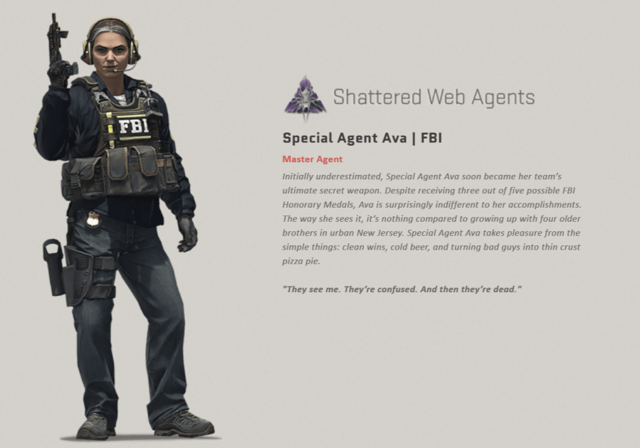

CS:GO a inregistrat un nou record de jucatori in urma ultimei campanii
CS:GO a primit recent o noua operatiune, Shattered Web, care a introdus harti noi, agenti deblocabili, un battle pass si multe alte noutati in jocul FPS multiplayer al Valve. Si se pare ca nu doar o mica parte din jucatori se bucura de aceasta, astfel jocul a atins cel mai mare numar de jucatori activi inregistrat vreodata.
Conform spuselor The Loadout, pagina Steam Charts de CS:GO arata ca in Noiembrie 2019 jocul a vazut un numar mediu de jucatori undeva in jurul a 426.080 – cel mai mare inregistrat de la lansarea jocului si la o diferenta sesizabila. Cel mai aproapiat punct, din aceasta perspectiva, este August 2019 cand jocul a inregistrat 415k utilizatori activi in medie, urmat de Septembrie, Octombrie si Ianuarie 2019, cat si de luna Februarie 2017, toate avand o medie de peste 400K. Deci vorbim totusi de un numar impresionant inregistrat de acest joc.
Noul record a fost stabilit in urma lansarii operatiunii Shattered Web, care a fost lansata pe data de 18 Noiembrie. Noua operatiune a introdus un sistem de progresie similar cu un battle pass, care iti permite sa aduni stelute prin intermediul unor misiuni saptamanale si sa deblochezi elemente cosmetice, cat si un skin special Master Agent pentru jucatorii care ajung la 100 de stele.

De asemenea, include un sistem de premiere care iti permite sa-ti verifici reusitele legate de aceasta operatiune si harti precum Lunacy, Jungle si Studio.
Noiembrie a mai insemnat si stabilirea unui nou record de jucatori activi in acelasi timp, cu peste 758k de jucatori fiind conectati la serverele jocului concomitent. Acest numar este mai mare si decat cel inregistrat in Decembrie 2018 (peste 746k) odata cu introducerea in CS:GO a modului de battle royale, Danger Zone. Se pare ca jocul a prins din nou viata si chiar daca nu se mai bucura de succesul de acum cativa ani, reuseste sa fie un succes pentru Valve, atat din perspectiva numarului de jucatori, cat si a profitului generat.